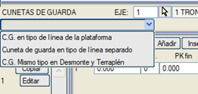
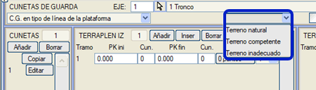
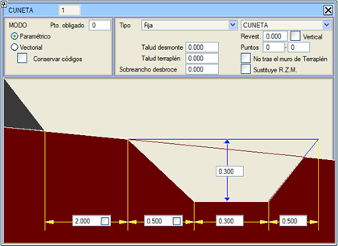
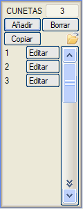
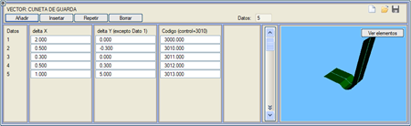
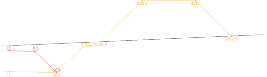
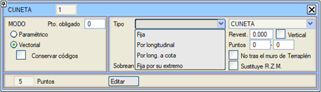
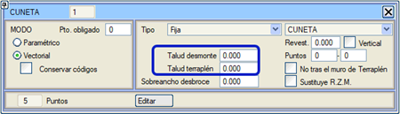

| |
|
KAFA VE TOPUK HENDEĞİ
|
Genel Bilgiler Vektörel veya Parametrik Kafa Hendekleri Vektörel Kafa/Topuk Hendeği Tanımı Sabit Hendek, Boyuna Hatta Göre, Boyuna Hatta Göre Kotlu, Uç Noktasına Göre Sabit Hendek Hendek Kaplaması Kafa Hendeğinin Uygulanması Çizgiye Göre Kafa Hendeği Genel Bilgiler Kafa hendeği, dolgu topuğundan veya yarma şev başından belirli veya değişken bir mesafeye yerleştirilebilir ve varlığı, gerekli kılan limit eğimi belirleyen bir kontrol noktasına bağlı olarak koşullandırılabilir. Bu menüde, farklı kafa hendeği veya topuk hendeği geometrilerine sahip bir tablo ve bu hendekleri DOLGU veya YARMA durumunda ve sağ ile sol tarafları ayırarak farklı kesimlere yerleştirmek için dört veri listesi tanımlanabilir. Her kesimde, başlangıç ve bitiş kilometreleri için farklı bir hendek veya topuk hendeği tanımlanabilir; bu durumda geometri kesim boyunca bir geçiş yapar. Enkesitte gösterimi için üç olasılık mevcuttur:

Eğer Sağlam zemine göre kafa hendeği seçeneği etkinleştirilirse, kafa hendeğinin yapılacağı arazide önceden bir sıyırma yapıldığı kabul edilir. Dolguda kafa hendeği tanımlanmışsa, bu yerleştirilir ve zayıf zemindeki yarma vektörü uygulanmaz. Dolgu topuğu, bu seçenekle kafa hendeğinin nerede tanımlandığına bağlı olarak doğal zemine veya sağlam zemine ulaşacaktır. Aynı şekilde zayıf zemine göre de tanımlanabilir. 
Zorunlu K.H. seçeneği etkinleştirildiğinde, kafa hendeği, kontrol noktasının araziye göre konumunu kontrol etmeden her zaman uygulanır (Vektörel olarak kafa/topuk hendeği tanımı bölümünde kontrol noktasının işleyişi açıklanmaktadır). Vektörel veya Parametrik Kafa Hendekleri Kafa hendekleri iki şekilde tanımlanabilir: vektörel ve parametrik. Parametrik tanım, resimde gösterildiği gibi doğrudan bir kafa hendeği modeli üzerinde yapılır. Bu nedenle, farklı geometrik elemanların boyutlarını doldurmak, tam olarak tanımlanması için yeterlidir. Eğer hendeğin ayrıca bir kaplaması varsa, kalınlığı Kaplama metin kutusunda tanımlanır. [ ] Dikey kutucuğu, kaplama kalınlığına eşit bir yükseklikte hendek geometrisinin dikey bir kopyasını oluşturur. Bu durumda, dolgu kaplaması, hendek kaplamasının başladığı yerde kesilir; ve dış arazide ise, kaplama araziyi kestiğinde kesilir. 
Bir zorunlu nokta tanımlamak mümkündür, böylece araziyi zaten kesmiş olsa bile en azından o noktaya kadar her zaman uygulanır (YARMA'da tanımlanan geleneksel hendekler durumunda olduğu gibi). Eğer zorunlu nokta araziyi zaten geçmişse, ondan sonra yarma veya dolgu şevi ile devam eder. Hendek modelindeki ilgili kutucuklar, bir yandan kafa hendeğini sıyırma ek genişliğinden sonra ekleme; diğer yandan da hendek şevinin dolgu şevine eşit olması seçeneklerini seçmeye olanak tanır. Elbette, Dolgu duvarından sonra değil seçeneği işaretlenirse, program bir duvar varsa dolguda kafa hendeği yerleştirmez. Eğer Kodları Koru seçeneği etkinleştirilirse, program şev taramaları çizimi için kodların otomatik olarak değiştirilmesini engeller. Her bir taraftaki kafa hendeklerinin kesimlerini, dolgudan yarmaya ve tersi yönde kopyalama imkanı.  Ayrıca, aynı eksen içinde kafa hendeklerini kopyalama veya kesimler olmadan bir .cug dosyasından başka bir tanımı açma imkanımız da vardır. 
Vektörel Olarak Kafa/Topuk Hendeği Tanımı Hendeğin nokta sayısını gösteren kutucuğa tıklandığında, geometrisini ve davranışını beyan etmeyi sağlayan tipik vektörel tanım menüsüne erişilir: 
1 numaralı veride, delta X değeri, dolgu topuğundan veya yarma şev başından, arazi yüzeyinden itibaren hendeğin kazılmaya (veya topuk hendeğinin oluşturulmaya) başlandığı mesafeyi belirtir, bu nedenle bu ilk noktanın delta Y'si araziyi takip ettiği için dikkate alınmaz. Kodlar, 3000 değerinden başlayarak sıralanmalıdır. 3010 kodlu nokta kontrol noktasıdır ve boyuna hatta göre tanımlanmış kafa/topuk hendeği durumunda boyuna hatta "bağlanan" noktadır.  Bu kontrol noktasına bağlı olarak, kafa/topuk hendeği geometrisi düzenlenirken aşağıdaki beş tipten biri tanımlanabilir:

Yarma Duvarı Tacı'ndan sonraki Topuk Hendeği tipi hendekler için, eğer ilk noktaya 3010 kontrol kodu konulursa ve tip boyuna hatta göre ayarlanırsa, o zaman boyuna hattın kotu duvarın tacının altındaysa, hendeğin tüm geometrisi o kotta başlayacak şekilde aşağı indirilir. Sabit Hendek, Boyuna Hatta Göre, Boyuna Hatta Göre Kotlu, Uç Noktasına Göre Sabit Hendek Aşağıdaki hendek / topuk hendeği Tiplerini kullanabiliriz: 

ISPOL4.dar metraj tablosu, bu geometrinin ürettiği dolguyu ölçen TOPUK_HENDEĞİ metrajını içerir (Kafa hendekleri ayrı çizgi tipinde kutucuğu etkinleştirilmişse). Sıyırma Ek Genişliği parametresi, Dolgu'dakine benzer. Hem yarmadaki hem de dolgudaki kafa hendekleri için geçerlidir. Yarma Duvarından Sonra Kafa Hendeği: Duvarın taç şevi araziyi kestiğinde ve bu kesişim duvar temelinin kazı sonundan önce olduğunda hendeği başlatmak için bir seçeneğimiz vardır: Duvar Temel Dolgusunu Değiştir. Kafa hendeklerinin planda çizimi için, bazı .lil çizim stillerinde kullanılan özel komutlar bulunmaktadır. Hendek Kaplaması ISTRAM®BIM, hendeğin iç kaplamasını tanımlamaya olanak tanır. Kaplama kalınlığının değeri Kaplama kutucuğunda belirtilir. Bir kaplama değeri kullanıldığında, program hacim raporlarında bunun metrajını hesaplar. Bitişikteki kutucuk etkinleştirilirse, kaplama dikey olarak yapılır. Bu tür bir hendek kaplandığında, kaplanan ilk ve son nokta belirtilebilir. (Eğer son nokta 0 olarak bırakılırsa, sona kadar kaplanır). Bu, Noktalar kutucuklarında belirtilmelidir. Ayrıca, açılır menü ile farklı kafa hendeklerinin kaplamalarını ayırt etmek için 4 farklı malzeme türü kullanılabilir. Boyuna hatta göre hendekler ve 3B Çizgi x Hendek Tabanı (mod 6) için, kaplanan ilk noktaya -1 koyarsak, o zaman uzatılan başlangıç kesiminden sadece teorik yükseklik kaplanacaktır. (Vektörde tanımlanan). Kafa Hendeğinin Uygulanması Hendek ve mod tanımlandıktan sonra, Sol Dolgu, Sağ Dolgu, Sol Yarma veya Sağ Yarma'ya bir veri ekleyerek ve o hendeğin uygulama alanını kilometre bazında kesimlere ayırarak ve uygulanacak hendek numarasını belirterek kafa hendeğinin nereye uygulanacağını belirtiriz. Hendeğin başlangıç noktasının konumu, Çizgi seçeneği ile bir plan çizgisiyle tanımlanabilir. Bu seçenek, Topuk Hendeği(k100) ve Topuk Hendeği(kod) için geçerli değildir. Eğer çizgi tarafından belirlenen başlangıç noktası, dolgu topuğundan veya yarma şev başından, vektörün ilk kesiminde tanımlanan veya parametrik olarak tanımlanan değerden daha az bir mesafede ise, o zaman çizginin konumu yerine bu parametrik veya vektörel olarak tanımlanan değer geçerli olur. Eğer çizgi tarafından belirlenen başlangıç noktası, dolgu topuğundan veya yarma şev başından, vektörün ilk kesiminde tanımlanan veya parametrik olarak tanımlanan değerden daha büyük bir mesafede ise, o zaman bu ilk segment çizginin konumuna kadar uzatılır. Çizgi seçiminin yanındaki kutucuğu etkinleştirerek, program seçilen çizginin hendeğin başlangıç noktası yerine bitiş noktasına karşılık geldiğini anlayacaktır. Bu durumda program şu şekilde hareket eder:
[Aktar] seçeneği, kafa hendeklerinin başlangıcı için tanımlanan her bir çizgi için bir harita çizgisi oluşturur. Önceden seçilmiş bir çizgiyi seçimden kaldırmak istersek, içerdiği nokta sayısını gösteren tuşa basılır ve ardından program bizden bir çizgi seçmemizi istediğinde, haritanın boş bir alanına tıklarız. Sağlam zemine göre bir Kafa Hendeği tanımlandığında, dış dolgu kaplaması ve yarma kaplaması, sağlam zemini kesene kadar uzatılır. Dış dolgu kaplaması mevcut olduğunda, kafa hendeğinin başlangıcı için dolgu topuğuna olan mesafe, kaplamanın topuğundan ölçülür. Çizgiye Göre Kafa Hendeği Kafa hendeğini tanımlamak için bir çizgi seçildiğinde artık altı olasılığımız var:
|